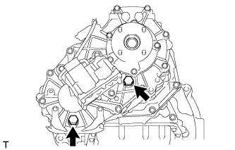

TRANSFER OIL > REPLACEMENT |
| 1. DRAIN TRANSFER OIL |
|  |
Remove the filler plug and gasket.
Remove the drain plug and gasket, and drain the transfer oil.
Install a new gasket and the drain plug.
| 2. ADD TRANSFER OIL |
Remove the filler plug and gasket.
Add oil so that the oil level is between 0 to 5.0 mm (0 to 0.196 in.) from the bottom lip of the filler plug hole.
Wait approximately 5 minutes and check that the oil level has not changed.
Install a new gasket to the filler plug and then tighten the plug.